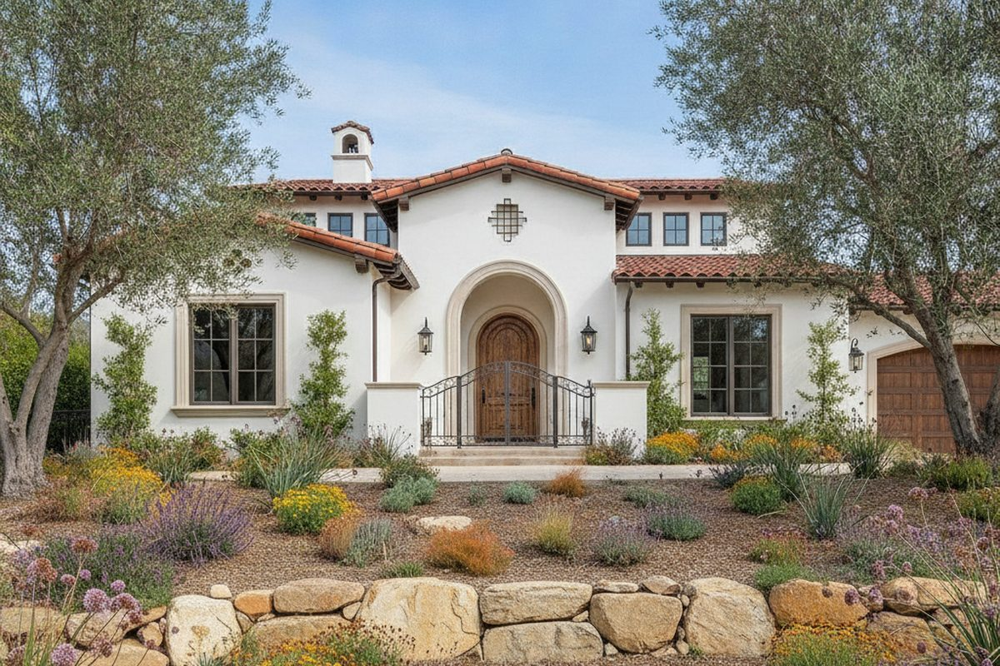

Certified Residential Appraisals for San Marcos, California
I am Brian Ward, a California Certified Residential Real Estate Appraiser preparing independent, non-lender valuations across the City of San Marcos. Every assignment follows USPAP, and I confirm the exact fee before any work begins.
Appraisal Services
The reports below cover the range of residential valuation work I handle for San Marcos attorneys, families, and property owners.
Date of Death Appraisals
A retrospective appraisal establishing what a San Marcos home was worth on the date of death, prepared to the standard estates and the IRS require for a stepped-up basis.
Learn more →Divorce Appraisals
An impartial valuation of the marital home in San Marcos, prepared for both spouses and their attorneys, with a reduced fee when the parties jointly retain me.
Learn more →Estate & Trust Appraisals
Valuations of San Marcos property held in an estate or trust, prepared for trustees, executors, and their advisors to support settlement, distribution, and tax reporting.
Learn more →Bankruptcy Appraisals
Fair market valuations of San Marcos real estate for bankruptcy filings, supplying debtors, attorneys, and trustees with the documented figure the schedules and the court require.
Learn more →Expert Witness & Litigation Support
Litigation support and courtroom testimony from an appraiser with 20-plus years of experience, backing San Marcos valuations that must stand up under cross-examination.
Learn more →Pre-Purchase Appraisals
An independent read on value before you commit to a San Marcos purchase, so you know what a home is really worth rather than relying on the asking price.
Learn more →Pre-Sale Appraisals
Before you list a San Marcos home, an independent appraisal shows what the market supports, helping you set a price with evidence instead of guesswork.
Learn more →Tax Appraisals
Independent valuations of San Marcos property for tax matters, from assessment appeals to gift and basis reporting, documented to the standard the authorities expect.
Learn more →Family Transaction Appraisals
When property changes hands between family members in San Marcos, an independent appraisal sets a fair price and documents the transfer for the IRS and every relative involved.
Learn more →Insurance Dispute Appraisals
When an insurer's figure does not match the loss, an independent appraisal documents the value of a San Marcos property or its damage to support your claim.
Learn more →Bail Bond Appraisals
A prompt, independent appraisal documenting the equity in a San Marcos property pledged to secure a bail bond, prepared to the standard courts and bondsmen require.
Learn more →Immigration Appraisals
An independent appraisal of a San Marcos property for immigration filings, documenting real estate assets to support an Affidavit of Support or a related petition.
Learn more →Why Owners and Attorneys Work With Me
Decades of local experience and reports built to hold up under scrutiny.

Two Decades in the Field
I have been appraising since 2004 and have completed more than 7,000 assignments. That depth means I have already worked through the situations a San Marcos property is likely to present.
No Lender in the Room
My reports answer to you, not to a bank underwriting a loan. That independence matters when a valuation has to hold up in front of a court, an executor, or the other side of a dispute.
Local Knowledge That Reads Correctly
From Mello-Roos tracts in San Elijo Hills to well-and-septic acreage in Twin Oaks Valley, I know how San Marcos features move value rather than treating every home as a comparable box.
Clear Fee, Clear Timeline
You get a quoted price confirmed in writing before I start and most residential reports back within several business days, so there are no surprises on cost or schedule.
Responsive Service
I work efficiently to meet court deadlines and time-sensitive transactions. Contact me to discuss your timeline.
Fair, Transparent Pricing
Published fees starting at $299 with no hidden charges. Complex properties and rush delivery are quoted upfront.
San Marcos Neighborhoods I Cover
I appraise throughout the City of San Marcos and its surrounding communities, including the neighborhoods listed here.
Ready to get started?
Request an appraisal online or call directly at (858) 208-4521.